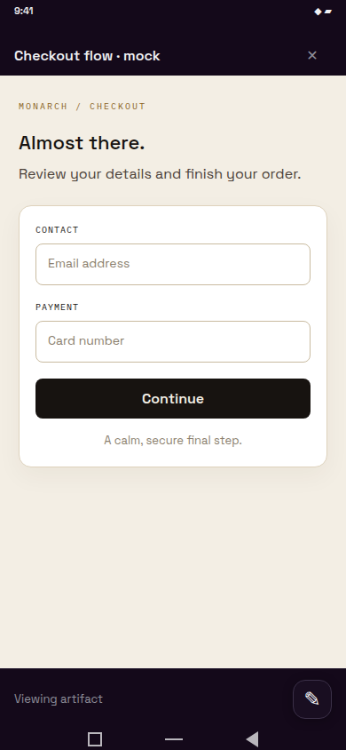
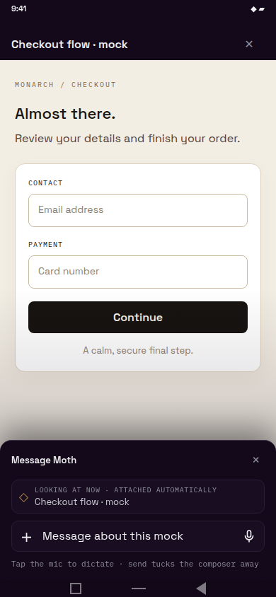
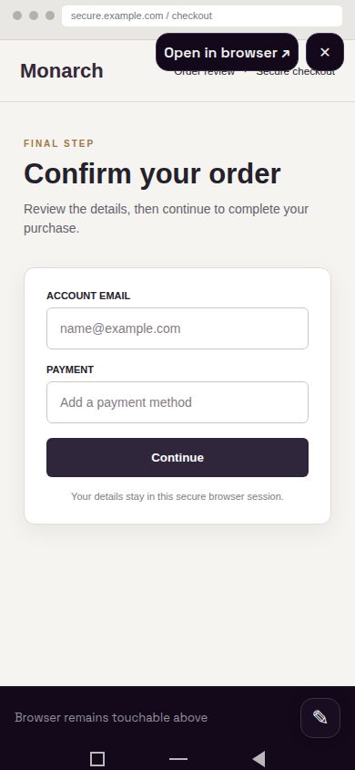
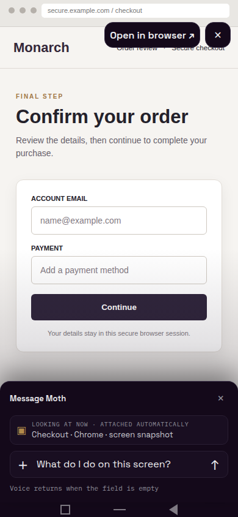
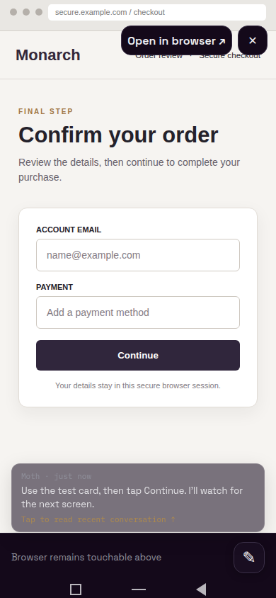
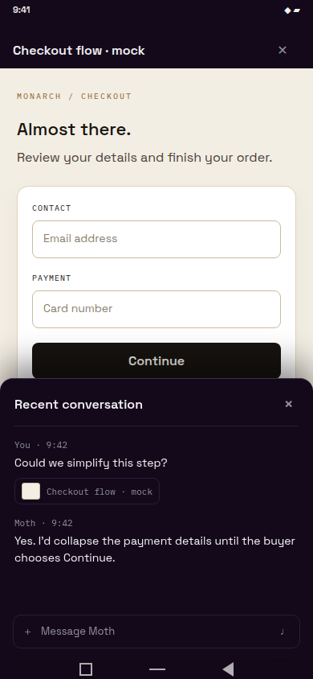
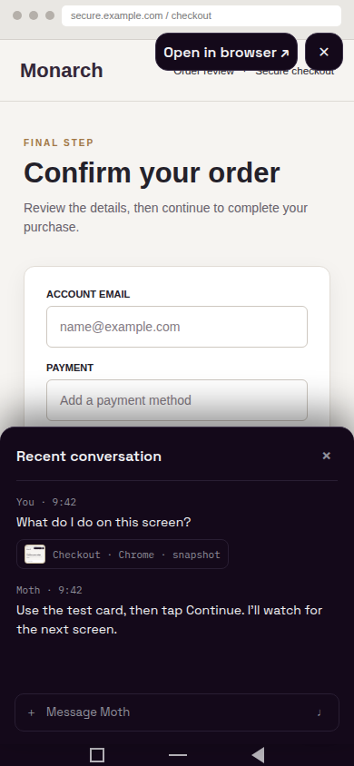
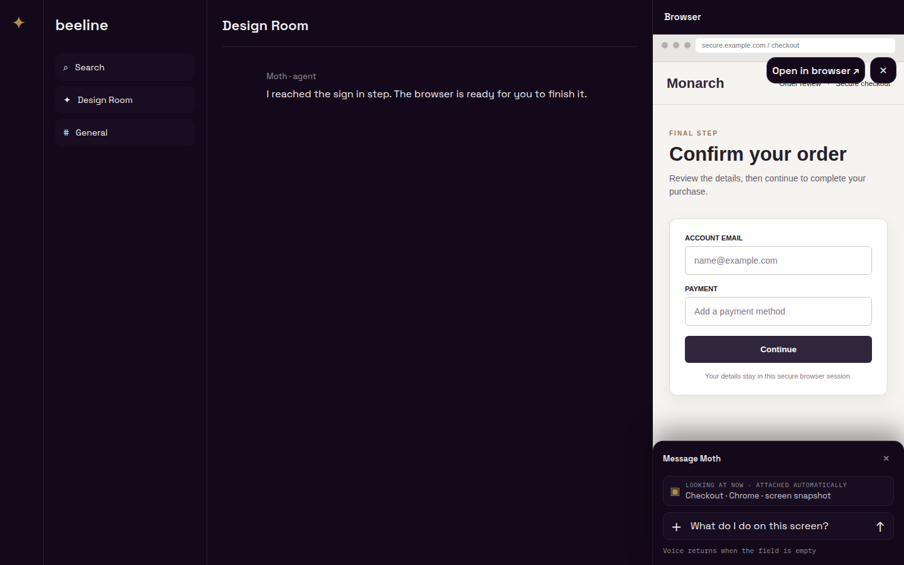

A 44 px rounded control sits in its own strip above Android’s three-button navigation bar. The regular composer slides up over either viewer, keeping voice available. A sent message carries the artifact title or a browser snapshot. The agent’s latest reply arrives as a quiet temporary ticker; tapping it opens recent conversation.
390 × 844 phone1440 × 900 desktopObsidian shell + Bone mock and themeBrowser taps remain in the stream above the control strip
Entry and compose
1 · Artifact, idleViewer stays full screen; the only new control is at bottom right.

2 · Artifact, composer openSame artifact remains visible. Context is attached automatically; the empty field shows the voice control.

3 · Live computer session, idleThe button lives below the browser iframe, so page taps keep their take-over behavior.

4 · Live computer session, composer openThe current screen snapshot is attached. A typed question swaps the mic for send.

5 · Bone themeThe viewer controls and dock use Bone tokens with the same placement.
Reply and recent history
6 · Reply tickerA translucent, compact preview of the latest reply fades after a few seconds; tap to expand.

7 · Expanded recent transcriptRecent messages appear as a shallow overlay on the artifact, with the artifact context on the sent message.

8 · Browser context after sendThe sent message identifies the browser session and keeps a thumbnail of the screen seen at send time.

Desktop work pane
9 · Browser pane, composer openThe same action lives inside the 400 px work pane; the Room transcript stays in place.

The screenshots render the current ArtifactViewerScreen and ComputerSessionViewer from app source through React Native Web, with the app’s Space Grotesk and IBM Plex Mono fonts. The overlay controls and sample artifact/browser pages are visual fixtures for approval. Rebuild with node .lavish/viewer-composer/build.mjs, serve this directory, and capture frame.html?frame=…. Implementation begins after approval and after the parallel computer-use viewer change lands.